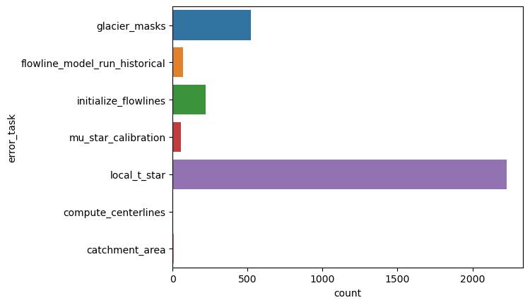
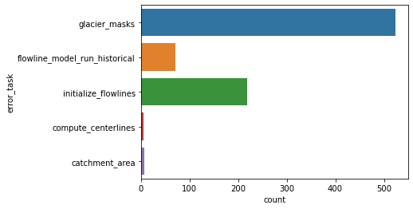

Error analysis of the global pre-processing workflow¶
Here we reproduce the error analysis shown in Maussion et al. (2019) for the pre-processing part only, and for the new glacier directories (version 1.4). The error analysis of user runs needs a separate handling, see the deal_with_errors notebook for more information.
Get the files¶
We download the glacier_statistics files from the preprocessed directories folders, at the level 5. That is, we are going to count all errors that happened during the pre-processing chain.
from oggm import utils
import pandas as pd
import seaborn as sns
# This is CRU + centerlines. But you can try CRU+elev_bands, or ERA5+elev_bands, etc!
url = 'https://cluster.klima.uni-bremen.de/~oggm/gdirs/oggm_v1.4/L3-L5_files/CRU/centerlines/qc3/pcp2.5/no_match/RGI62/b_040/L5/summary/'
# this can take some time
df = []
for rgi_reg in range(1, 19):
fpath = utils.file_downloader(url + f'glacier_statistics_{rgi_reg:02d}.csv')
df.append(pd.read_csv(fpath, index_col=0, low_memory=False))
df = pd.concat(df, sort=False).sort_index()
Analyze the errors¶
sns.countplot(y="error_task", data=df);

"% area errors all sources: {:.2f}%".format(df.loc[~df['error_task'].isnull()].rgi_area_km2.sum() / df.rgi_area_km2.sum() * 100)
'% area errors all sources: 3.24%'
Most errors occur because the interpolation of tstar did not work.
We now look at the errors that occur already before applying the climate tasks:
dfe = df.loc[~df['error_task'].isnull()]
dfe = dfe.loc[~dfe['error_task'].isin(['local_t_star', 'mu_star_calibration'])]
"% area errors before climate: {:.2f}%".format(dfe.rgi_area_km2.sum() / df.rgi_area_km2.sum() * 100)
'% area errors before climate: 0.41%'
sns.countplot(y="error_task", data=dfe);

# 15 largest glaciers
df.loc[~df['error_task'].isnull()].sort_values(by='rgi_area_km2', ascending=False)[['rgi_area_km2', 'error_task', 'error_msg']].iloc[:15]
| rgi_area_km2 | error_task | error_msg | |
|---|---|---|---|
| rgi_id | |||
| RGI60-17.15804 | 790.282 | mu_star_calibration | MassBalanceCalibrationError: RGI60-17.15804 mu... |
| RGI60-17.15808 | 721.950 | local_t_star | MassBalanceCalibrationError: RGI60-17.15808: m... |
| RGI60-13.54431 | 663.729 | flowline_model_run_historical | RuntimeError: CFL error: required time step sm... |
| RGI60-17.15897 | 428.505 | local_t_star | MassBalanceCalibrationError: RGI60-17.15897: m... |
| RGI60-05.10735 | 392.607 | local_t_star | MassBalanceCalibrationError: RGI60-05.10735: m... |
| RGI60-05.10634 | 388.067 | local_t_star | MassBalanceCalibrationError: RGI60-05.10634: m... |
| RGI60-05.10617 | 373.290 | local_t_star | MassBalanceCalibrationError: RGI60-05.10617: m... |
| RGI60-05.10762 | 309.061 | local_t_star | MassBalanceCalibrationError: RGI60-05.10762: m... |
| RGI60-05.10748 | 289.188 | local_t_star | MassBalanceCalibrationError: RGI60-05.10748: m... |
| RGI60-13.43483 | 282.721 | flowline_model_run_historical | RuntimeError: CFL error: required time step sm... |
| RGI60-17.15898 | 268.749 | local_t_star | MassBalanceCalibrationError: RGI60-17.15898: m... |
| RGI60-01.16377 | 254.841 | flowline_model_run_historical | RuntimeError: CFL error: required time step sm... |
| RGI60-05.10988 | 207.766 | local_t_star | MassBalanceCalibrationError: RGI60-05.10988: m... |
| RGI60-14.04404 | 203.336 | flowline_model_run_historical | RuntimeError: CFL error: required time step sm... |
| RGI60-05.10959 | 183.850 | local_t_star | MassBalanceCalibrationError: RGI60-05.10959: m... |
What’s next?¶
return to the OGGM documentation
back to the table of contents